왜 특허 초안을 AI로 쓰려 했나
발표자는 AI(Artificial Intelligence)를 쓴 비즈니스 모델로 특허를 준비하면서 먼저 변리사 견적을 받아 봤어요. 아래 견적서의 합계 칸에 적힌 금액이 300만 원 후반에서 400만 원 초반이에요. 전문 검토와 작성이 필요한 일이니 어느 정도는 예상한 금액이었다고 해요.
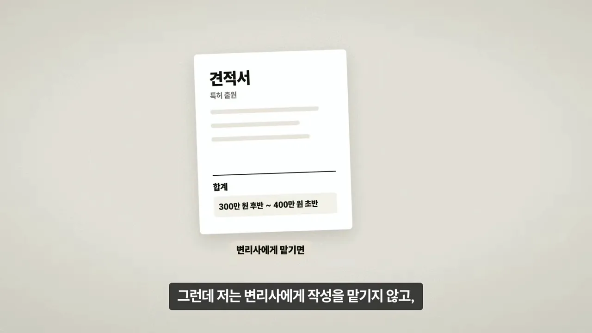
특허 전문가도 아닌 사람이 AI로 직접 써 볼 생각을 한 데는 해외 흐름이 있었어요. 변호사와 법무팀은 이미 자기 업무에 맞춘 AI를 쓰고 있어요. 화면에 뜬 기사는 법률 AI 회사 하비(Harvey)의 투자 소식인데, 노란색으로 강조한 부분이 기업가치 155억 달러예요.
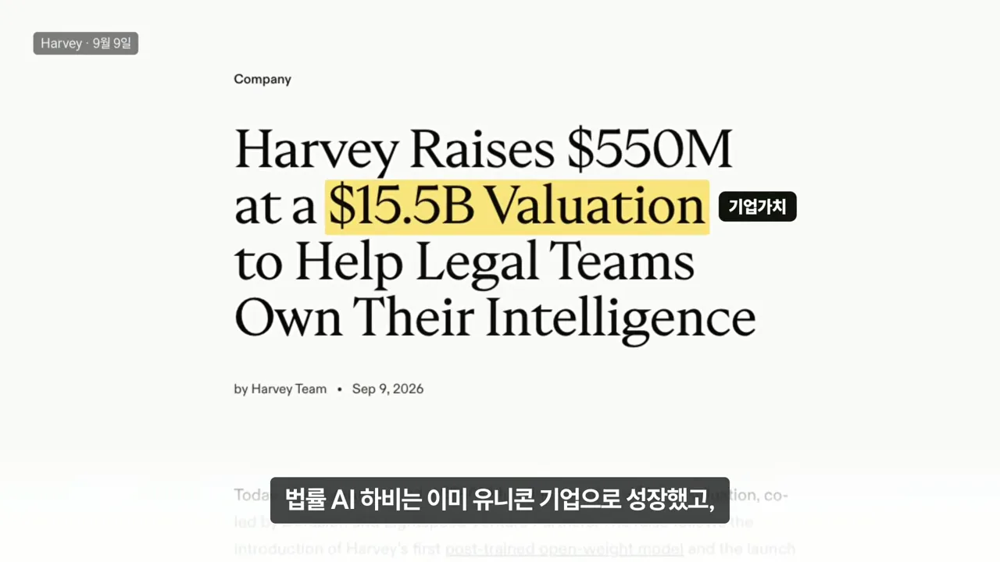
AI로 서비스를 만드는 속도가 빨라진 만큼, 내 기술이 기존과 무엇이 다르고 어디를 특허로 보호할 수 있는지 정리해 둘 필요가 커졌어요. 특허로 보호하지 않으면 다른 사람도 그 아이디어를 쓸 수 있기 때문이에요. 아래 화면은 비공개 메모로 둔 '내 아이디어'가 청구항, 명세서, 도면으로 이어지는 모습을 그렸어요.
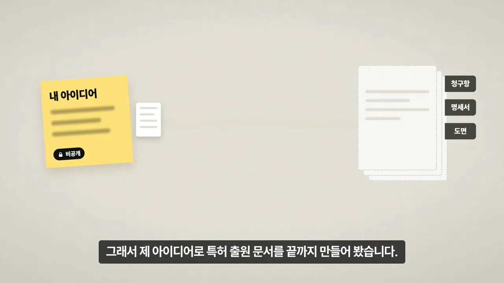
대화하면서 초안 만들기
발표자는 자기 비즈니스 모델의 출원 서류 초안을 하루 만에 만들었어요. 아직 출원 전이라 실제 내용은 공개하지 않았고, 화면의 문서는 모두 예시예요. 강조한 건 처음부터 특허 문장을 쓸 줄 알아야 시작할 수 있는 게 아니라는 점이에요.
비교 대상은 변리사에게 맡길 때의 순서예요. 아래 빨간 선은 전문가 찾기, 상담 일정, 자료 보내기, 기술 설명, 이해 맞추기의 다섯 단계를 지나야 '초안' 깃발에 닿아요.
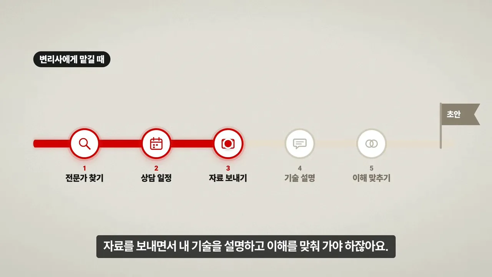
내 말로 설명하면서 시작해요
PatentFlow에서는 어떤 아이디어인지, 어떻게 작동하는지를 평소 말로 설명하면서 바로 시작했어요. 아래 Claude Code 화면의 말풍선 두 개가 그 예시예요. 하나는 판매 기록으로 내일 팔릴 양을 예측한다는 설명이고, 다른 하나는 모자란 재료를 사장님이 확인하면 거래처에 바로 주문된다는 설명이에요. 특허 용어는 하나도 없어요.
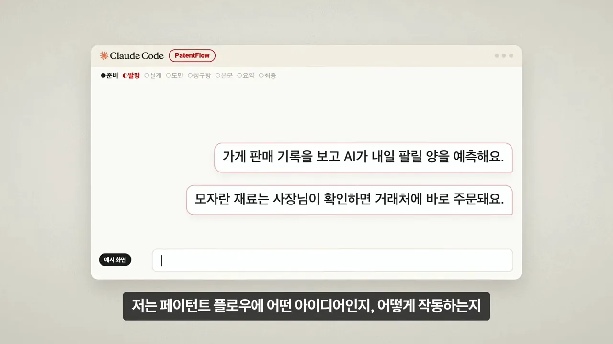
부족한 내용은 Claude와 대화하듯 채워요. 내 설명이 문서로 어떻게 바뀌는지 중간중간 볼 수 있고, "이 부분은 조금 더 넣고 싶어요"라고 말하면 그 방향으로 보완해요. 아래 화면에서 분홍색으로 강조된 문단이 보완 요청을 받아 새로 들어간 '발주 처리부' 설명이에요.
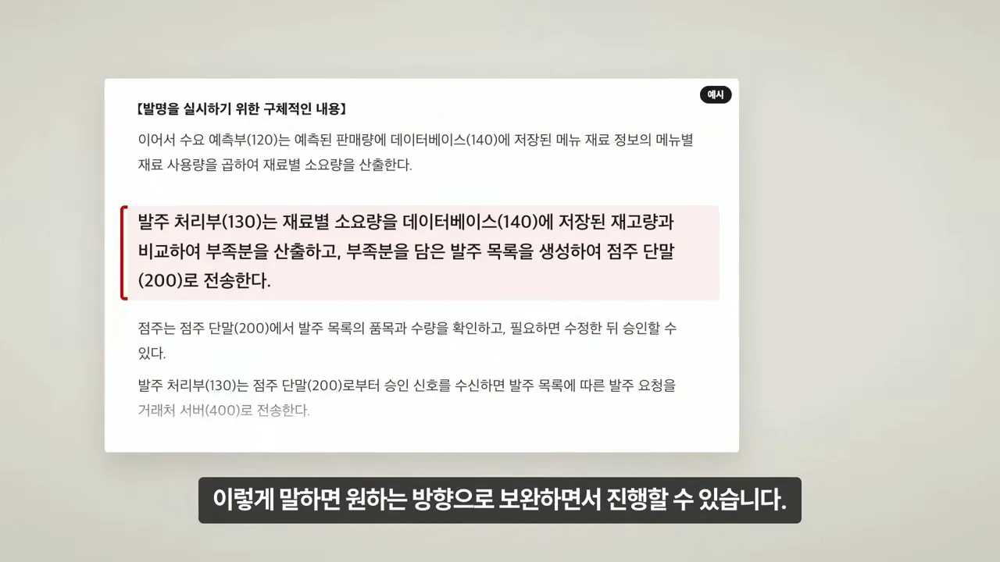
청구항부터 본문, 도면, 요약서까지 나오면 내 설명이 잘 들어갔는지 읽고 보완할 곳을 짚으면 돼요. 아래는 예시 청구항 1이에요. '인공지능 기반 음식점 수요 예측 및 자동 발주 시스템에 있어서'로 시작해 구성 요소를 하나씩 나열해요.
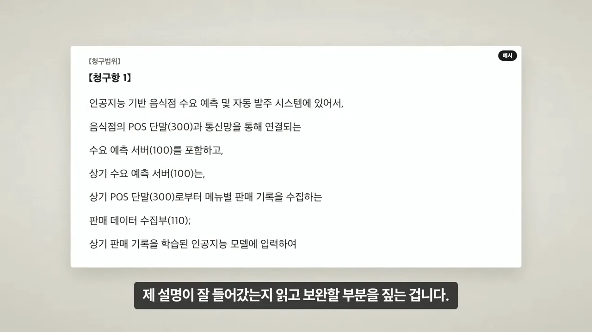
변리사와 일정을 맞출 필요도 없었어요. 상대의 업무 시간에 연락할 필요가 없으니, 평일이 바쁘면 주말에, 퇴근 뒤 생각이 정리됐으면 그때 시작하면 돼요.
고치고 점검하는 과정
발표자가 가장 크게 느낀 차이는 문서를 고칠 때였어요. 전문가에게 맡기면 수정 사항을 정리해 보내고, 담당자가 반영한 문서를 다시 확인해야 해요. 아래 그림은 '나'와 '담당자' 사이를 화살표가 여러 번 오가는 모습이에요.
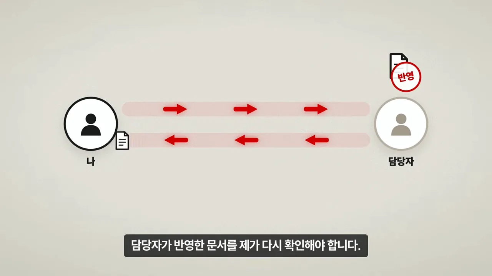
PatentFlow에서는 생각난 자리에서 바로 요청해요. 결과를 보고 또 바꾸고 싶으면 이어서 말하면 되고, 상대의 회신을 기다리지 않아요. 발표자는 표현 하나를 마음에 들 때까지 여러 번 고쳐 봤다고 해요. 영상이 보여 준 흐름을 한 장으로 모으면 이래요.
flowchart TB
A["아이디어를 내 말로 설명"] --> B["대화로 빈 곳 채우기"]
B --> C["청구항·본문·도면·요약서 초안"]
C --> D["읽고 수정 요청"]
D --> E["관련 문서 함께 수정"]
E --> F{"점검 기준 통과?"}
F -- "아니요" --> G["다시 작성"] --> F
F -- "예" --> D
하나를 고치면 관련 문서도 맞춰요
도면을 바꾸면 그 구조를 설명하는 본문과 요약서에도 같은 내용이 들어가야 해요. 아래 화면은 왼쪽 대화창에서 '날씨 정보도 반영해서 예측하도록 넣어 주세요'라고 요청하자, 오른쪽 도면에 '수정' 표시가 붙고 진행 막대가 본문과 요약서 쪽으로 이어지는 모습이에요.
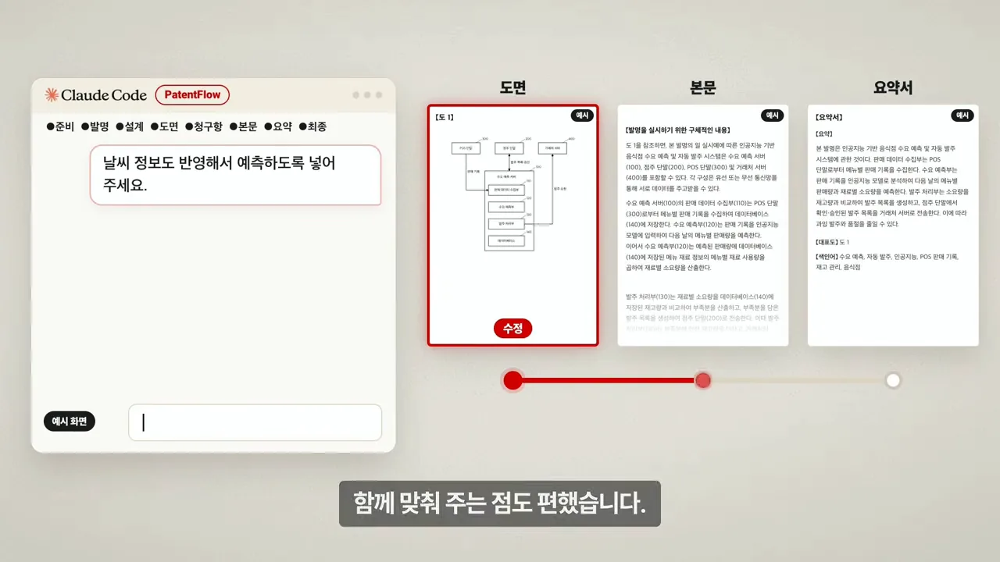
특허 작성 기준으로 점검해요
PatentFlow에는 특허 작성에 맞춘 점검 과정도 들어 있어요. 아래 점검표에 체크된 다섯 항목이 그 기준이에요. 청구항에 쓴 내용이 본문에 설명돼 있는지(청구항·본문 뒷받침), 부호와 도면 번호가 맞는지, 도면 형식이 규격에 맞는지 같은 것들이에요.
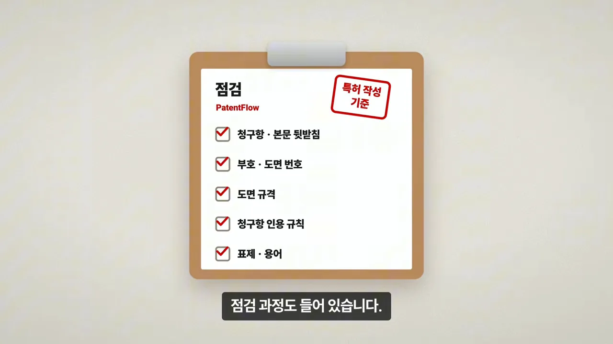
몇 번이고 다듬을 수 있으니 다음 아이디어에도 계속 쓰게 되겠다는 게 발표자의 결론이에요.
비용과 쓰기 위한 조건
비용 이야기에서 발표자가 든 계산은 단순해요. 전문가에게 맡기면 특허마다 새 비용이 들어요. 아래 막대는 한 건에 300만 원이라고만 가정했을 때예요. 아이디어 1은 300만 원, 아이디어 2까지면 600만 원, 아이디어 3까지면 900만 원으로 블록이 쌓여요.
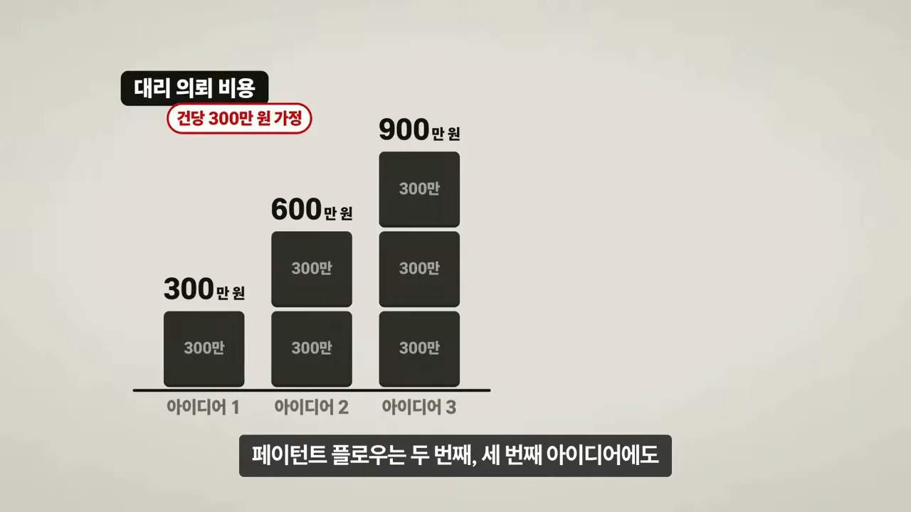
PatentFlow는 한 번 산 버전을 두 번째, 세 번째 아이디어에도 계속 써요. 작성 건수 제한이 없고, 새 초안을 쓰거나 여러 번 고쳐도 제품 값이 더 붙지 않는다고 해요. 영상이 말한 두 방식의 차이를 표로 모으면 이래요.
| 비교 항목 | 변리사에게 맡길 때 | PatentFlow로 쓸 때 |
|---|---|---|
| 시작하기까지 | 전문가 찾기, 상담 일정, 자료 보내기, 기술 설명, 이해 맞추기 | 내 말로 설명하며 바로 시작 |
| 작업 시간 | 담당자 업무 시간에 맞춤 | 주말이든 퇴근 뒤든 내가 원할 때 |
| 수정 | 정리해서 보내고 며칠씩 회신 대기 | 그 자리에서 요청하고 이어서 수정 |
| 비용 | 특허마다 새로 듦 (건당 300만 원 가정 시 3건 900만 원) | 한 번 구매, 건수·수정 횟수 제한 없음 |
| 맡는 범위 | 초안 작성·다듬기, 특허 선행 조사, 출원 대리 | 초안 작성·다듬기 |
마지막 줄이 발표자도 직접 짚은 부분이에요. 아래 그림에서 '변리사 대리 업무' 괄호 아래 세 칸 중, '작성 도구'라고 빨갛게 표시된 건 맨 왼쪽 '초안 작성·다듬기' 하나뿐이에요.
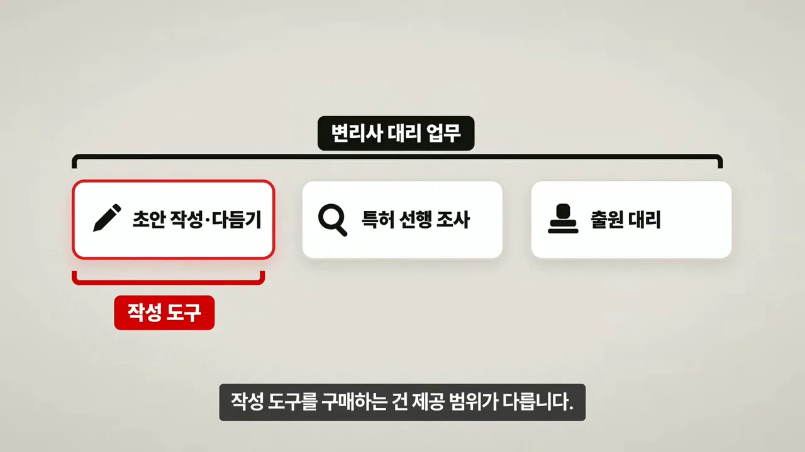
쓰기 위해 필요한 것
사용 환경은 Claude Code이고 Claude Pro 이상 요금제가 필요해요. 아래 화면 왼쪽 카드는 PatentFlow가 1회 구매 제품이고 출원 총비용이 아니라는 뜻이에요. 오른쪽 '별도' 칸에는 Pro 이상의 Claude 이용료, 요금제마다 다른 사용량 한도, 실제 출원할 때 내는 출원 수수료가 따로 적혀 있어요.
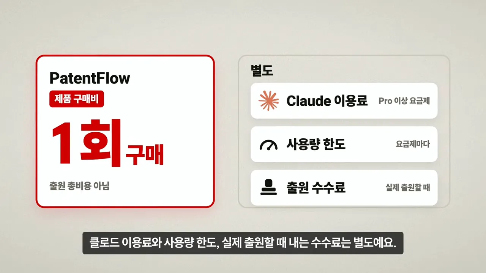
누가 쓰면 좋을까, 도구의 몫은 어디까지일까
발표자는 아이디어를 구체화해 내 것으로 지키고 싶은 사람에게 두루 권해요. 아래 화면 아래쪽 사진 세 장이 그 대상이에요. 1번은 새 제품·서비스를 준비하는 사람, 2번은 기존 기술을 개선해 본 개발자·연구자, 3번은 현장에서 일하다 찾은 불편의 해결법을 생각해 둔 사람이에요.
학생에게도 권해요. 특허 출원은 논문처럼 내 이름으로 남는 기록이라 진로를 준비하거나 커리어를 쌓을 때 강점이 될 수 있다는 이유예요. 특허 문서가 어려워서 시작하지 못했다면 이 도구로 직접 정리해 볼 수 있다고 해요.
전문가 검토의 출발점이 되는 문서
도구로 만든 문서는 전문가와 이야기할 때도 쓸모가 있어요. 아래 화면은 청구항 1과 도 3 순서도가 담긴 초안 옆에 '이 범위로 충분할까?'라는 메모를 붙인 모습이에요. 막연히 맡기는 대신, 이 문서를 놓고 어디를 더 확인받고 싶은지 짚어 물을 수 있어요.
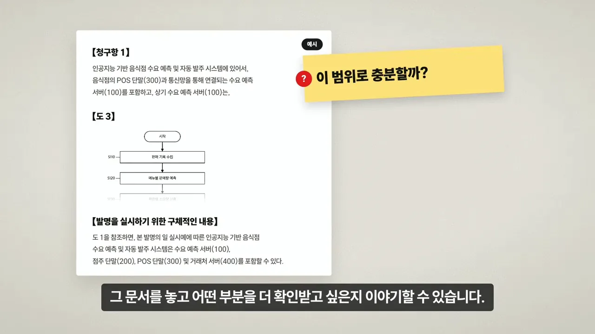
발표자는 변리사도 이런 도구를 업무 보조로 쓰면 편하겠다고 봐요. 초안 정리나 수정 사항을 관련 문서에 반영하는 일은 도움을 받고, 직접 검토하며 전문적인 판단에 더 집중할 수 있다는 거예요. 본인은 지금 완성한 초안을 확인하며 출원을 준비하고 있어요.
특허 등록 여부는 이후 심사를 통해 결정되지만 그 첫 문서를 제 손으로 만들 수 있었다는 게 정말 만족스러웠습니다.
— 영상 07:11